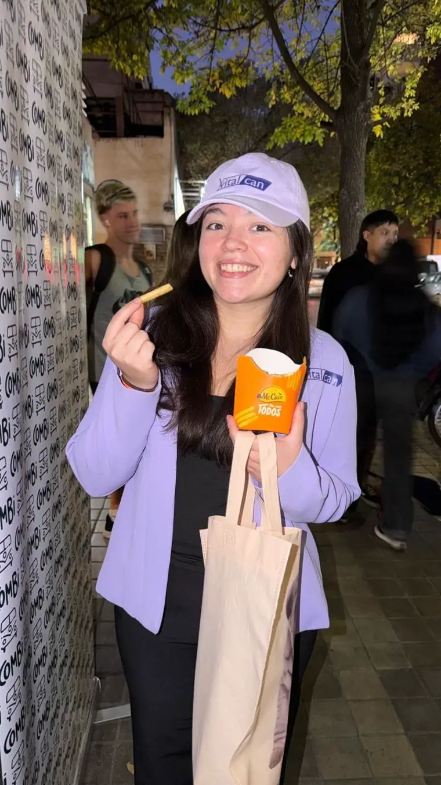
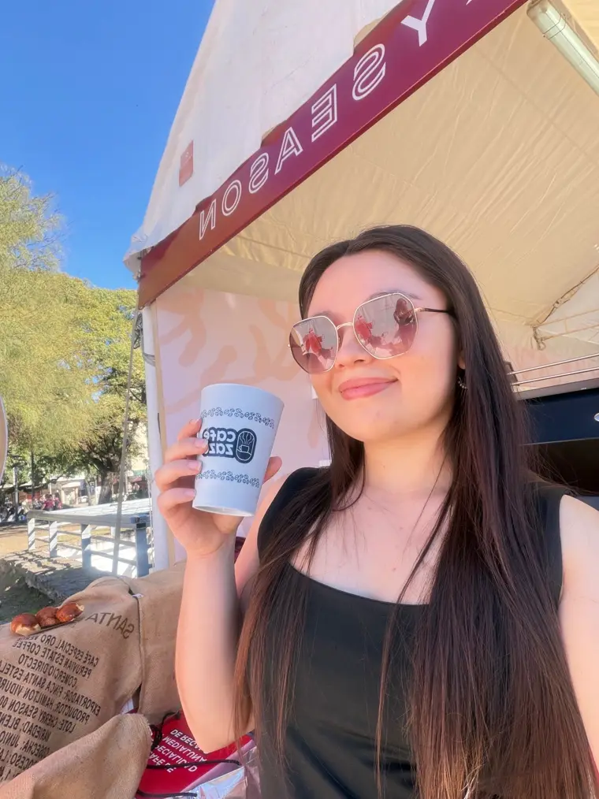
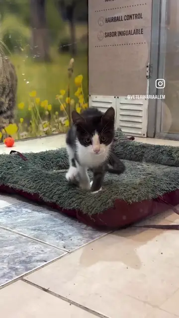
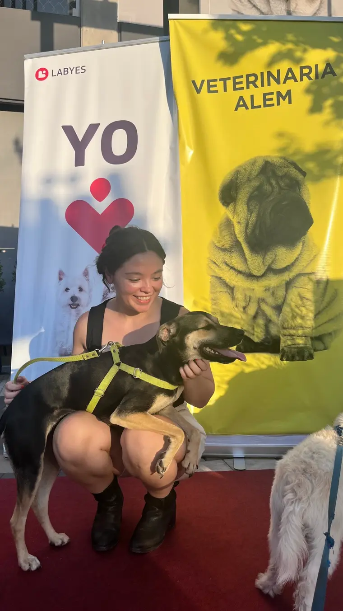
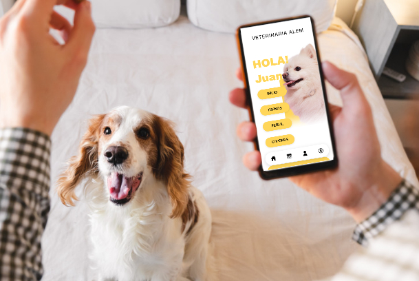

Volver a Proyectos
Caso de estudio · Marketing integral
Veterinaria Alem
Coordinación de Marketing para locales propios, franquicias y canales digitales
Coordino el área de Marketing de Veterinaria Alem. Trabajo a diario con mi equipo, otras áreas de la empresa, proveedores y marcas aliadas para resolver las necesidades de comunicación de la marca en Argentina y Uruguay. Organizo prioridades y acompaño la implementación de cada acción, desde la planificación hasta su salida en locales y canales digitales.



Contenidos
Planifico y produzco contenidos para contar qué pasa en Alem. Cada pieza parte de una necesidad concreta, como explicar un trámite, presentar una sucursal o mostrar un producto en uso.
Eventos
Desde Marketing coordinamos eventos y activaciones en locales propios y junto a marcas aliadas. Acompañamos cada acción desde la comunicación previa y la preparación de materiales hasta la cobertura del evento.

Campañas digitales
Coordino la comunicación y la implementación de campañas comerciales. Organizo la producción de piezas y su adaptación a redes, pauta, tienda online y locales.
Cyber Monday
Coordino la adaptación de la propuesta comercial para cada mercado y su implementación en la tienda online, las campañas digitales y los locales.
Alianzas de marketing
Coordino acciones de marketing con marcas aliadas. Distribuimos muestras de alimento con un sticker y un código QR en sus puntos de venta para mantener presencia de marca y conectar con potenciales clientes.
Cherry Season
Entrega de muestras en los puntos de venta de la marca.
Fitness Group
Entrega de muestras a través de su red de puntos de venta.
Desarrollo web
Desarrollo herramientas digitales para resolver necesidades concretas de Alem y sus clientes.

Club Alem
App del programa de fidelización de Veterinaria Alem.
Ver proyecto Club Alem
Cotizador web de peluquería
Herramienta para estimar el precio del servicio de peluquería.
Ver proyecto Cotizador de PeluqueríaTienda online y SEO
Soporte en tienda online
Acompaño la operación del ecommerce, la actualización del catálogo y la configuración de promociones para campañas comerciales.
SEO
Optimizo contenidos para que los clientes encuentren los productos y la información que buscan.
Paid Media y Email Marketing
Paid Media
Gestiono campañas en Meta Ads y Google Ads para acompañar objetivos comerciales y dar visibilidad a los servicios de Alem.
Email Marketing
Desarrollo comunicaciones por correo para promociones, aperturas y novedades, como la llegada de Alem a Cañitas Soho.
Gestión del área
Creé un dashboard de Marketing para registrar las tareas del equipo, sus categorías y el tiempo de producción. El tablero calcula automáticamente qué porcentaje del tiempo dedicamos a cada área o categoría y nos ayuda a detectar sobrecarga y decidir si podemos sumar proyectos.
Dashboard de Marketing
Descarga gratuita · Excel
- TareasSeguimiento por categoría y tiempo de producción
- Distribución del tiempoCálculo automático por área o categoría
- Capacidad del equipoEvaluación de carga y disponibilidad para nuevos proyectos